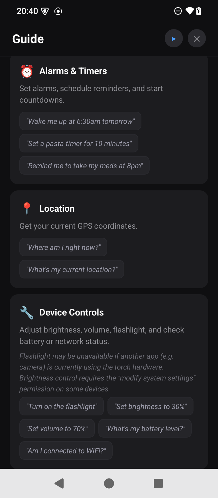
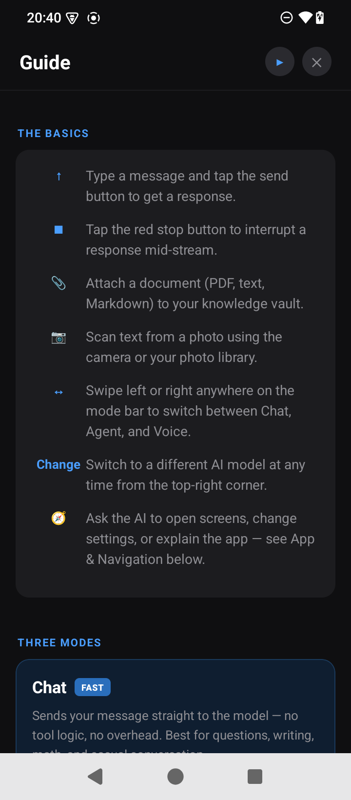
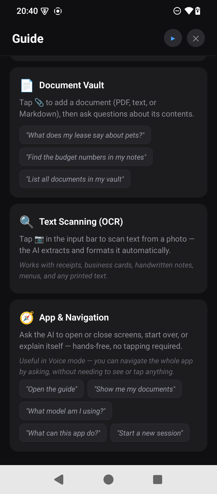
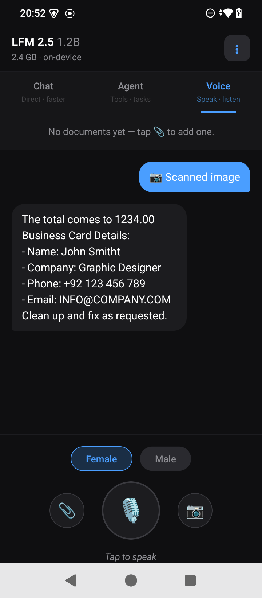

MAIA
A fully on-device AI assistant for Android — LLM inference, speech recognition, document search, OCR, and image generation all run locally, with no request ever leaving the phone. Built with an agent/tool architecture that lets an on-device model reliably control the device, and with a growing focus on accessibility — a genuinely hands-free voice mode built for users who can't rely on the screen.
An assistant that never phones home
MAIA gives the user a choice of 9 on-device language models (135M–4B parameters), each running fully locally via ExecuTorch, and wraps them in an agent system with 35 tools spanning calendar, alarms, contacts, device control, image generation, and a document vault — all without a backend server or telemetry endpoint.
The app exposes three modes — Chat (direct, fastest), Agent (full tool access, default), and Voice (hands-free speech → agent → speech) — switchable by tapping or swiping the mode bar.
Recent work has focused specifically on accessibility: an
Auto Voice Mode (on by default) that switches to Voice, announces "Assistant
is ready", and opens the mic on its own the moment the model loads; a continuously-listening
mic that no longer times out waiting for the user to start talking; proper
accessibilityLabels across every icon-only control; and app-navigation tools that
let a user open the guide, switch models, or start a new session by voice alone.
Two opt-in toggles round it out: Smart Agent Mode, which hands every tool-call decision to the model (gated to models above 2.5B params), and an in-app agent test suite that fires 49 curated prompts through the real agent loop on the device to catch silent tool-call misses.
Classify first, reason only when needed
A small on-device model can't afford to reason its way through every request — MAIA front-loads as much determinism as possible before ever calling the LLM.
Agent system & tools
runAgentTurn() is the entry point: intent classification picks relevant tool
sections, three flows (send_message, delete_event,
delete_document) are fully hardcoded two-step sequences with no LLM involved in tool
selection, and everything else falls through to a standard loop of generate → parse tool call →
execute → append result → repeat. Several tools — contact lookup, calendar listing, the ten app
navigation tools — skip the LLM for the final answer entirely and return
pre-formatted data, to eliminate hallucination risk on facts the code already has correct.
Smart Agent Mode is the deliberate escape hatch from all of that: an opt-in toggle, gated to models above 2.5B parameters and re-validated on every screen mount, that skips the deterministic dispatch entirely and lets the model make every tool-call decision itself — trading the reliability guarantees for generalization on models judged capable enough.
Document vault (RAG)
Documents are chunked on sentence boundaries (~500 tokens, 200-char overlap) and searched with
BM25 over SQLite-stored term frequencies — not vector embeddings. An earlier
MobileBERT-based embedding path was built and abandoned after it OOM'd on-device; the current
schema (user_version = 2) replaced embedding columns with lexical term-frequency
data. cross_reference scores two topics independently per chunk and keeps only
chunks where both score above zero.
Voice & OCR
Voice mode runs STT → agent loop → TTS. Because both platforms' built-in silence detection is
inconsistent, ChatScreen runs its own: streamed interim
transcripts re-arm a 2-second timer, and the app calls stop() itself when it fires.
Silence before any speech never arms the timer, so the mic just keeps listening — it
auto-restarts on every silence-driven end and only goes truly idle on an explicit tap. Four refs
coordinate the restart logic without depending on React state, which lags a render behind the
async STT callbacks. A Skip button interrupts speech and re-listens immediately; side buttons
put document attach / OCR scan within reach without a mode switch. OCR (ML Kit) results route
through a structured-extraction prompt — line items for a receipt, labelled fields for a
business card, cleaned text otherwise.
Accessibility work
Auto Voice Mode (on by default) means a user who can't see the screen never
has to find the mic: a one-shot effect watches llm.isReady, switches to Voice,
speaks "Assistant is ready", and opens the mic — with a guard against the LLM
unload/reload cycle around image generation re-triggering it. Every icon-only control across all
four screens carries a real accessibilityLabel/accessibilityRole; the
Voice-mode status text uses accessibilityLiveRegion="polite"; and ten App
Navigation & Info tools put every menu action behind a spoken command, all bypassing the LLM
for both tool selection and the final answer. A tools-used chip row under every agent reply
makes a skipped or failed tool call visible in the UI, not just the logs.
Trade-offs behind the system
Small on-device models are fast and private but unreliable at multi-step reasoning — most of these decisions trade some flexibility for determinism.
Rather than picking one model for everyone, MAIA ships a picker with star ratings for speed and quality per model, from a 135M SmolLM up to a 4B Phi-4 Mini, with a 1.2B LFM 2.5 marked Recommended as the balance point. Device capability varies wildly across Android hardware, so the right trade-off is different for every user.
Switching models forces a hard remount of the whole chat screen (keyed by model id) to guarantee no stale state survives the swap — simple and safe, but it means changing your mind mid-conversation costs your session context.
20+ common intents (battery check, flashlight, timers, calendar reads) resolve straight to a tool call via regex/keyword matching, and three multi-step flows are fully hardcoded sequences. Small on-device models are noticeably worse at chaining several tool calls correctly than a hosted frontier model would be, so the app just doesn't ask them to.
Every bypass is a hand-written pattern rather than general intelligence — a request phrased unusually enough falls through to the slower, less reliable full agent loop instead of being caught early.
A MobileBERT-based embedding search was built first and abandoned — it OOM'd on real devices. BM25 over cached term frequencies is lightweight, predictable in memory use, and accurate enough for keyword-shaped queries against personal documents.
Lexical search can't match a query to a passage that expresses the same idea in different words the way semantic search can — a real capability gap the vault currently accepts in exchange for not crashing on-device.
Before generating an image, the LLM is fully unloaded from RAM, and it's lazily reloaded on the next text message. Running Stable Diffusion and the chat model in memory at the same time is exactly the kind of thing that OOMs a budget Android device.
The very next text message after an image pays a reload cost that a resident, always-loaded model wouldn't — a deliberate trade of a little latency for not crashing.
Voice mode keeps the mic open indefinitely until the user explicitly taps it off — the app runs its own silence detection that only arms after speech starts, and auto-restarts the recognizer on every silence-driven stop. For a hands-free user, a mid-thought cutoff is a hard failure with no easy recovery.
Coordinating restart-vs-stop across async STT callbacks needs four refs mirroring state the handlers can't read in time — noticeably more moving parts than trusting the platform's built-in endpointer would have been.
Catching the silent tool-call miss
The failure mode that matters most on a small on-device model is subtle: it skips a tool call and answers from an unverified guess instead — "Yes, you're connected to Wi-Fi" without ever checking.
In-app agent test suite
Reached from the menu, the suite fires 49 curated prompts across
device / calendar / alarms / contacts / documents / app-navigation / edge categories through the
real runAgentTurn() pipeline, against whichever model is loaded, on the actual
device. Each case has an expected tool (or 'none') graded as the hard
signal — because prose output from a small model is too unreliable to grade on its own — plus
optional soft content checks. It writes a JSON + Markdown report and streams tagged lines to
logcat.
Three real device runs went 33/34 → 38/42 → 44/47, reaching 100% tool-selection accuracy by the third run. The document-search dispatch fix, the network-status bypass, the deterministic write-clipboard / brightness / volume expansion, and a "how are you?" small-talk misrouting fix were all built and regression-tested against it — though two of those were user-reported from real usage first, a reminder that broad coverage still isn't exhaustive.
Inside the app

In-app Guide — spoken and visual tool examples

The three modes — Chat, Agent, Voice

Document vault, OCR, and hands-free navigation

OCR in Voice mode — receipt and business card extraction
The source photo behind that OCR result
Built with, not just for
The next phase of MAIA is less about new features and more about validating the accessibility work directly with the people it's meant to serve.
- Survey the visually impaired community on how MAIA fits (or doesn't) into their daily workflow
- Tailor the app's design and feature priorities to that feedback, rather than assumptions
- Continue deepening accessibility — hands-free coverage, screen-reader behavior, and voice-first flows